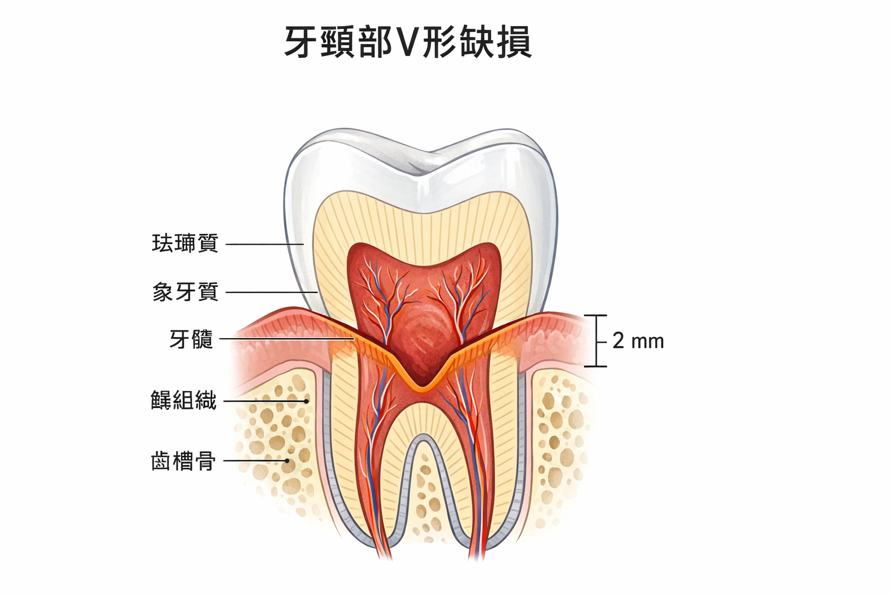
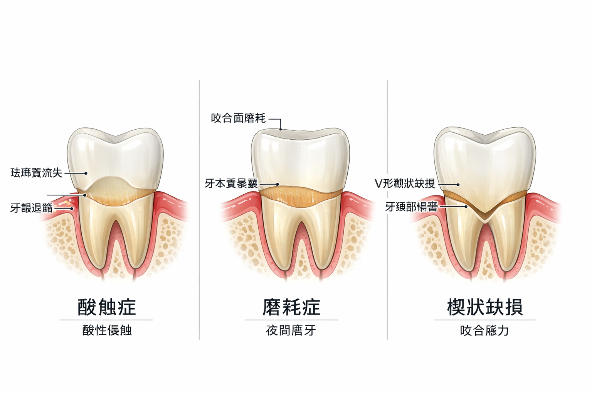

🎬 你有沒有遇過這個情況？
牙醫說你牙頸部有磨損，幫你補好了。幾年後回診，那個地方又脫落了，要再補。
這樣的情況一再發生，你覺得很困惑——我已經很注意刷牙了，為什麼還是一直壞？
答案可能不在你的刷牙方式，而在你每天 1,000–2,000 次的吞嚥動作。
🎥 相關學術簡報
本主題的學術簡報
以下簡報由趙哲暘醫師整理，資料來源為同儕審查學術文獻，歡迎線上觀看或分享。
🎨 AI 視覺圖卡
圖解：牙齒頸部為什麼會凹下去？
以下圖卡由 AI 根據學術文獻自動繪製，用視覺化方式呈現 NCLS 的成因與機制。
🦷
非齲性頸部病損視覺說明圖卡
4 張 AI 插圖圖卡 · NCLS 成因與治療根源 · 中文版
點擊開啟圖卡 →
▲ 點擊開啟 Gamma 互動圖卡 ｜ 資料來源：學術文獻整理，趙哲暘醫師審訂
🖼 醫學解說圖
非齲性頸部病損：視覺化關鍵說明
以下解說圖由 GPT Image 1.5 依據學術文獻繪製，呈現 NCLS 的缺損型態與成因。


圖像由 GPT Image 1.5 生成 ｜ 趙哲暘醫師審訂 ｜ 資料來源：同儕審查學術文獻
📖 基本觀念
NCCLs 是什麼？
NCCLs（Non-Carious Cervical Lesions，非齲性齒頸部磨耗）就是牙齒頸部（靠近牙齦的地方）出現的缺損——但不是蛀牙，而是磨耗造成的。
📍 在哪裡？長什麼樣？
在牙齒靠近牙齦的位置，出現一個楔形（V形）或凹碟形的缺口，有時伴隨牙齒敏感（喝冷水痠痠的那種感覺）。
流行率驚人：臨床成人中約 85% 都有不同程度的 NCCLs。這幾乎是人人都有的問題——但很少人知道真正的原因。
🔬 原因分析
NCCLs 的四大成因
NCCLs 不是單一原因造成的，通常是多種力量同時作用：
| 成因 | 機制 | 常見錯誤認知 |
|---|---|---|
| 刷牙磨耗（Abrasion） | 硬毛牙刷 + 橫向刷牙動作，物理摩擦牙頸部釉質 | 「這是最主要的原因」——其實只是其中一個 |
| 酸侵蝕（Biocorrosion） | 胃食道逆流（GERD）、飲食酸性食物，讓釉質酸蝕軟化 | 「只有喝可樂才會」——GERD 半夜逆流你不知道 |
| 咬合側向力（Abfraction） | 咬合不正或磨牙的側向力，在釉牙骨質界（CEJ）造成應力集中，使釉質微裂 | 「磨牙只磨咬合面」——側向力傷的是牙頸部 |
| 逆吞嚥橫向力（Tongue Thrust） | 吞嚥時舌頭橫向推力，每天 1,000–2,000 次，力量是正常 7.4 倍 | 很多人完全不知道這個原因的存在 |
💪 數字讓你嚇一跳
逆吞嚥的力量，有多驚人？
18.39
kPa — 逆吞嚥的舌頭橫向推力
2.469
kPa — 正常吞嚥的舌頭力量
7.4倍
逆吞嚥比正常吞嚥多出的力量差距
2,000次
每天吞嚥次數 × 每次 7.4 倍推力
📐 FEA（有限元素分析）告訴我們什麼？
研究人員用電腦模擬（FEA）計算不同方向的力量對牙齒的影響：
橫向力量（逆吞嚥的推力方向）在釉牙骨質界（CEJ）造成的應力集中最高。釉質在這個部位最薄（0.5–1mm），最容易因反覆應力而微裂、剝落。
這就是為什麼 NCCLs 最常出現在 CEJ，而不是整顆牙齒的頸部均勻磨耗。
😤 這很重要
為什麼補了還是一直脫落？
NCCLs 的修復失敗率，在 5–10 年內高達 50–75%。為什麼？
現狀
牙頸部有 NCCLs 缺損
牙醫幫你用樹脂（composite）填補，表面恢復平整
↓
問題
造成缺損的力量還在
逆吞嚥、磨牙、GERD——這些根本原因沒有被解決
↓
結果
填補物承受同樣的異常力量
樹脂的強度有限，在反覆橫向力下，邊緣開始微滲漏、脫落
↓
惡性循環
修復 → 脫落 → 再修復 → 再脫落
每次重補，要磨掉更多牙齒結構；幾次之後，問題比原來更嚴重
💡 治療的正確順序
正確的治療不是「先補再說」，而是：
- 找出造成 NCCLs 的所有原因（刷牙方式、GERD、磨牙、逆吞嚥）
- 解決這些原因（改刷牙姿勢、治療 GERD、處理 OSA/磨牙、OMT 治療逆吞嚥）
- 等力量環境穩定後，再進行修復——這樣修復才能長久維持
三句話總結
- NCCLs 不只是「刷牙太用力」造成的——逆吞嚥的橫向推力（每天 2,000 次、力量 7.4 倍）是一個常被忽略的重要成因。
- 修復失敗率 50–75% 的根本原因，是在沒有找出並解決異常力量的情況下就補牙，只是治標不治本。
- 正確的治療順序是：先找出並解決病因，再做修復——這樣填補的材料才能持久，不用一補再補。
「那個牙頸部小缺口，
不是刷牙刷壞的。」
不是刷牙刷壞的。」
── NCCLs 生物力學與口顎功能研究摘要
🧪 自我測試
你的牙頸部磨損風險有多高？
回想一下你的牙齒狀況，回答以下問題。
📝 NCCLs 風險評估
1. 牙醫曾告訴你牙頸部有磨損或缺損
2. 喝冷水或刷牙時，某顆牙的頸部會有酸痠感
3. 你有逆吞嚥（吞嚥時嘴唇或臉頰會用力），或吞嚥時舌頭往前推
4. 你有磨牙或咬緊牙齒的習慣
5. 有胃食道逆流症狀（餐後胸口灼熱、口苦、夜間胃酸逆流）
6. 你用的是橫向刷牙方式（左右來回），或刷牙很用力
7. 已補過的 NCCLs 填補物曾脫落需要重補
✅ 你可以做的事
如何降低 NCCLs 的傷害？
🪥 調整刷牙方式
改用軟毛牙刷，用 Bass 刷牙法（45度角輕輕振動），不要橫向大力摩擦。電動牙刷壓力傳感器可以幫助你不過度施力。
👅 治療逆吞嚥
OMT（口顎肌功能治療）訓練正確吞嚥模式，減少每天 2,000 次的橫向推力。這是解決 NCCLs 最被忽視、但最有效的根本治療之一。
😴 處理磨牙和 OSA
如果有磨牙，先評估是否有 OSA。治療 OSA 才能真正解決磨牙，而不只是用咬合板保護牙齒。
🍋 管理飲食和 GERD
減少酸性飲料（碳酸飲料、柑橘汁）的攝取，睡前 2–3 小時不進食。若有 GERD，積極治療。
❓ 常見疑問
關於 NCCLs 的疑問
我的 NCCLs 現在需要馬上補嗎？+
不一定。輕度的 NCCLs 如果沒有敏感症狀，可以先觀察，重點是找出並解決病因。如果有敏感、缺損持續擴大、或影響美觀，才需要修復。最重要的是：補之前先找病因，確認力量環境已改善，填補物才能維持久。
補了之後怎麼讓它不要再脫落？+
關鍵在於同時解決病因：（1）改善刷牙方式，（2）如有逆吞嚥，做 OMT，（3）磨牙要處理根本原因（OSA），（4）GERD 要治療，（5）調整咬合不正。材料的選擇也很重要——用流動樹脂搭配適當黏著步驟，能減少邊緣微滲漏。但最根本還是要消除異常力量。
NCCLs 會讓牙齒掉嗎？+
不太會直接導致掉牙，但如果放任不管，缺損可能深到靠近牙髓（神經），導致牙齒敏感、甚至需要根管治療。此外，NCCLs 處的結構弱化，在咬合時也較容易發生牙齒斷裂。早期發現、找出病因、適時修復，是保護牙齒的最好策略。
孩子也會有 NCCLs 嗎？+
可以有，但相對少見——NCCLs 是累積性損傷，需要時間積累。但如果孩子有嚴重逆吞嚥、磨牙或 GERD，也可能在年輕時就出現。更重要的是，早期糾正逆吞嚥和口呼吸，能預防未來的 NCCLs 發生。
📥 學術文件下載
本章學術整理文件
本頁所有數據均來自以下學術整理文件。歡迎下載完整版本，包含論文引用、量化數據與完整研究說明。
🔗 延伸閱讀